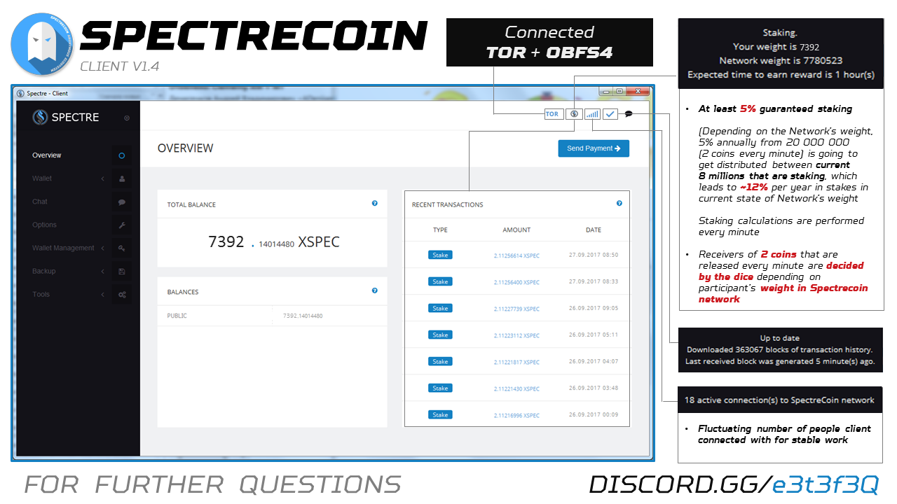

Proof of stake (PoS) is a type of algorithm by which a cryptocurrency blockchain network aims to achieve distributed consensus. In PoS-based cryptocurrencies, the creator of the next block is chosen via various combinations of random selection and wealth or age (i.e., the stake).
In contrast, the algorithm of proof-of-work-based cryptocurrencies such as bitcoin uses mining; that is, the solving of computationally intensive puzzles to validate transactions and create new blocks.
SpectreCoin operates on a Proof-of-Stake version 3 protocol (PoSv3), and the differences are described below.
Proof of Stake has a fairly long history. Not to cover every detail, but cover broadly what was changed between each version to arrive at PoSv3 for historical purposes:
PoSv1 - This version is implemented in Peercoin. It relied heavily on the notion of "coin age", or how long a UTXO has not been spent on the blockchain. It's implementation would basically make it so that the higher the coin age, the more the difficulty is reduced. This had the bad side-effect however of encouraging people to only open their wallet every month or longer for staking. Assuming the coins were all relatively old, they would almost instantaneously produce new staking blocks. This however makes double-spend attacks extremely easy to execute. Peercoin itself is not affected by this because it is a hybrid PoW and PoS blockchain, so the PoW blocks mitigated this effect.
PoSv2 - This version removes coin age completely from consensus, as well as using a completely different stake modifier mechanism from v1. The number of changes are too numerous to list here. All of this was done to remove coin age from consensus and make it a safe consensus mechanism without requiring a PoW/PoS hybrid blockchain to mitigate various attacks.
PoSv3 - PoSv3 is really more of an incremental improvement over PoSv2. In PoSv2 the stake modifier also included the previous block time. This was removed to prevent a "short-range" attack where it was possible to iteratively mine an alternative blockchain by iterating through previous block times. PoSv2 used block and transaction times to determine the age of a UTXO; this is not the same as coin age, but rather is the "minimum confirmations required" before a UTXO can be used for staking. This was changed to a much simpler mechanism where the age of a UTXO is determined by it's depth in the blockchain. This thus doesn't incentivize inaccurate timestamps to be used on the blockchain, and is also more immune to "timewarp" attacks. PoSv3 also added support for OP_RETURN coinstake transactions which allows for a vout to contain the public key for signing the block without requiring a full pay-to-pubkey script.
Basically, ‘staking’ algorithm awards nodes (wallets with synchronized blockchain that are online for keeping the peer-to-peer network operational.
A node/online wallet (and user in the end) receives 5% annually on the amounts of coins it has in the wallet being online at all times (or 24/7).
5% is the rate you receive if all the Coin Supply of the network(around ~21 mil currently) are being on the synchronized wallets and online (or ‘staking’).
Bonuses are being distributed every time a new block of transactions being accepted to the block chain (or every 60 seconds).
Reward for generating accepted block is around ~2 XSPEC.
Sometimes you generate a block, but someone was faster and got their block accepted first, then your block would be called ‘orphaned’ and you won’t receive reward for that block
As in practice the amount of wallets ‘staking’ online is much lesser in the moment (e.g 7 mil instead of 21 mil Coin Supply), 5% rewards of the whole Coin Supply (around 1 mil of XSPEC) would be distributed between fewer amount of people.
And as in our example given, XSPEC owners that hold 30% of coins being staked will receive benefits as if 100% of coin supply would have been ‘staked’, effectively increasing their bonus rewards rate from staking from 5% to 15%